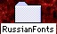
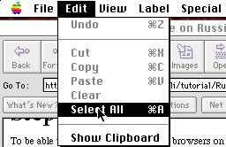
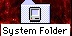
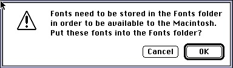

Page index / PC-MacRussian
Step Two
Step Two
Double-click the icon RussianFonts
on your desktop. You should see eight font suitcases, namely ER Architect KOI8, ER Architect Macintosh, ER Bukinist KOI8, ER Bukinist Macintosh, ER Kurier KOI8, ER Kurier Macintosh, ER Univers KOI8 and ER Univers Macintosh.Select all the files by choosing Edit Menu --> Select All.

Once all the files are highlighted, drag all the files onto the folder "System Folder"

till the folder is highlighted. Then release the mouse button. The computer will prompt a dialogue box as follows:
.Click "OK" and you are done with the font installation.
Now go on to the configurations of Netscape Navigator 3 and Internet Explorer 3.
Previous Step